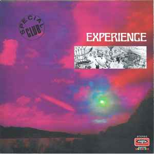

Experience
Experience
"Gimme Some Lovin', Snoopy Travel; This double LP was released in Japan as two separate single LP's., "Gimme Some Lovin'" is also on the first Japanese LP, Expérience – Expérience. The drum break can be found on both releases., "Snoopy Travel" is also on the second Japanese LP, Expérience – Expérience II. The drum break can be found on both releases."
Label: XL Recordings
Tag: Drums